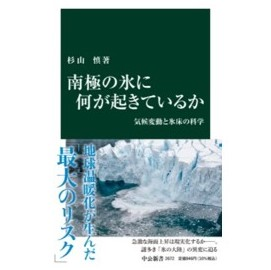
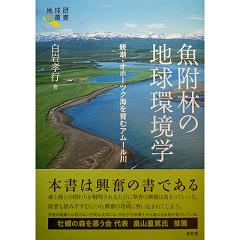
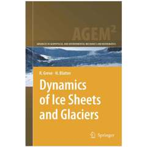
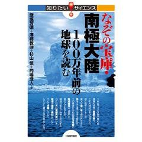
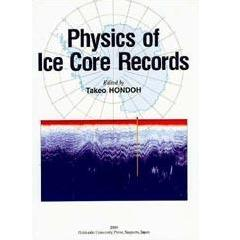

書籍
- 南極の氷に何が起きているか 気候変動と氷床の科学

- 杉山慎 (2021)
中央公論新社
ISBN 978-4-12-102672-9
新書判 / 216頁
日本の面積の約40倍に及ぶ〝地球最大の氷〟こと南極氷床。極寒の環境は温暖化の影響を受けにくいと言われてきたが、近年の研究で急速に氷が失われつつある事実が明らかになった。大規模な氷床融解によって、今世紀中に２メートルも海面が上昇するという「最悪のシナリオ」も唱えられている。不安は現実のものとなるか。危機を回避するためにすべきことは。氷床研究の第一人者が、謎多き「氷の大陸」の実態を解き明かす。
- The Dilemma of Boundaries. Toward a New Concept of Catchment
- Makoto Taniguchi, Takayuki Shiraiwa (eds.) (2012)
Springer
ISBN 978-4-431-540342-2
162 x 240 mm / 275頁
Water circulates continuously and seamlessly on Earth with little regard for the boundaries we draw. There are natural boundaries as between land and ocean and surface and subsurface environments, as well as human or demographic boundaries between nations, cultures, and religions. Although considered necessary by societies, these human-created boundaries disrupt natural water circulation, leading to serious water-related environmental problems. The dilemma of how to manage water beyond our boundaries remains, and nations have different ways and means of controlling each form of water, whether as vapor, surface water, groundwater, or seawater. Recent findings on the interaction of water from land, oceans, and the atmosphere encourage researchers to undertake collaborative work that goes beyond the boundaries of each discipline, be it oceanography, surface and subsurface hydrology, climatology, or glaciology. Drawing on all these fields, the book focuses on two major boundaries: that between surface water and ground water, and that between terrestrial water and ocean water. This comprehensive work is of great value to experts in academia, international organizations, consulting firms, water resources, fisheries, and urban development planning agencies.
- 極地研ライブラリー アイスコア -地球環境のタイムカプセル-
- 藤井理行・本山秀明 編著 (2011)
成山堂書店
ISBN 978-4-425-57011-9
四六判 / 268頁
古きをたずね新しきを知る。
地球環境の将来を予測する上で、古気候古環境の情報は、極めて重要である。極地の氷床（アイスコア）は、時間分解能が高いこと、過去数十万年前以前まで連続して遡れること、昔の空気そのものを含む環境シグナルを保存していることなどから、地球環境のタイムカプセルとも言える優れた記録媒体である。
本書は、気鋭の研究者達が、我が国のアイスコア研究の成果を分かりやすくまとめた最初の書物である。
- 魚附林の地球環境学 -親潮・オホーツク海を育むアムール川-

- 白岩孝行 (2011)
昭和堂
ISBN 978-4-8122-1118-2
四六判 / 226頁
- Dynamics of Ice Sheets and Glaciers

- Ralf Greve, Heinz Blatter (2009)
Springer
ISBN 978-3-642-03414-5
162 x 240 mm / 287頁
Dynamics of Ice Sheets and Glaciers presents an introduction to the dynamics and thermodynamics of flowing ice masses on Earth. Based on an outline of general continuum mechanics, the different initial-boundary-value problems for the flow of ice sheets, ice shelves, ice caps and glaciers are systematically derived. Special emphasis is put on developing hierarchies of approximations for the different systems, and suitable numerical solution techniques are discussed. A separate chapter is devoted to glacial isostasy. The book is appropriate for graduate courses in glaciology, cryospheric sciences, environmental sciences, geophysics and related fields. Standard undergraduate knowledge of mathematics (calculus, linear algebra) and physics (classical mechanics, thermodynamics) provide a sufficient background for successfully studying the text.
- なぞの宝庫・南極大陸 -100万年前の地球を読む-

- 飯塚芳徳, 澤柿教伸, 杉山慎, 的場澄人 (2008)
技術評論社
ISBN 4-7741-3661-1
B6判 / 200頁
南極点に人類が初めて到達してからほぼ百年。一年中雪と氷に覆われている南極は厳しい自然環境ゆえに今も人間活動が限られたままです。地球環境問題が毎日報じられる中、南極はそれに最も敏感に反応するといわれ、氷床が融解するのではという危惧も広まっています。本書はそのような南極の全体像を俯瞰し、大地と雪氷にどのような悠久の地球史が記されているかについて解説します。南極は絶え間ない地球規模の環境変動によって形成されてきたものであり、またそれ自身が地球全体の環境にも影響を与え返していることがわかります。
- Physics of Ice Core Records

- Takeo Hondoh (ed.) (2000)
Hokkaido University Press.
ISBN 4-8329-0282-2
B5判 / 480頁
- 基礎雪氷学講座 ４ 氷河
- 藤井理行, 上田豊, 伏見碩二, 小野有五, 成瀬廉二, 白岩孝行 (1997)
古今書院
ISBN 4-7722-1404-6
A5判 / 312頁